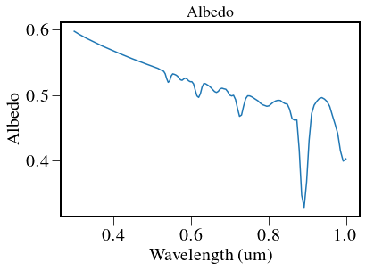
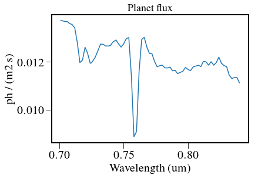
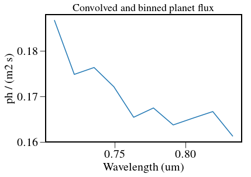
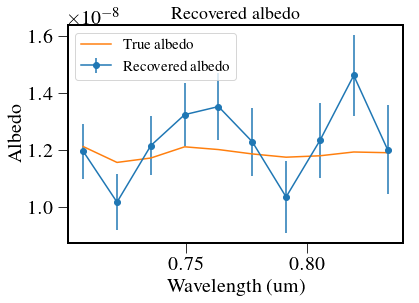
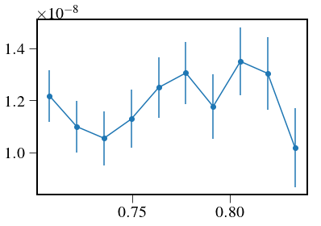

Analytical model¶
This is an analytical model to construct a simple SNR of a given spectrum.
In [1]:
%pylab inline --no-import-all
plt.rc('font', family='serif', serif='Times',size=15)
plt.rc('text', usetex=True)
plt.rc('xtick', labelsize=20)
plt.rc('xtick.major', size=10)
plt.rc('ytick.major', size=10)
plt.rc('ytick', labelsize=20)
plt.rc('axes', labelsize=20)
plt.rc('figure',titlesize=25)
plt.rcParams['image.origin'] = 'lower'
plt.rcParams['image.interpolation'] = 'nearest'
plt.rcParams['axes.linewidth'] = 2.
from astropy.io import fits
import astropy.units as u
import astropy.constants as c
import pandas as pd
import logging as log
from crispy.tools.initLogger import getLogger
log = getLogger('main')
from crispy.tools.image import Image
import os
os.chdir('/Users/mrizzo/IFS/crispy/crispy/WFIRST/')
from params import Params
par = Params()
par.hdr
from scipy.interpolate import interp1d
import pandas as pd
from astropy.table import Table,QTable
from crispy.tools.detutils import rebin
from scipy import ndimage
from IPython.display import display
Populating the interactive namespace from numpy and matplotlib
Out[1]:
SIMPLE = T / conforms to FITS standard
BITPIX = 8 / array data type
NAXIS = 0 / number of array dimensions
EXTEND = T
COMMENT
COMMENT ************************************************************
COMMENT ********************** General parameters ******************
COMMENT ************************************************************
COMMENT
NLENS = 108 / # lenslets across array
PITCH = 0.000174 / Lenslet pitch (meters)
INTERLAC= 2.0 / Interlacing
PHILENS = 26.56505117707799 / Rotation angle of the lenslets (deg)
PIXSIZE = 1.3E-05 / Pixel size (meters)
LENSAMP = 0.5 / Lenslet sampling (lam/D)
LSAMPWAV= 660.0 / Lenslet sampling wavelength (nm)
FWHM = 2.0 / FHWM of PSFLet at detector (pixels)
FWHMLAM = 660.0 / Wavelength at which FWHM is defined (nm)
NPIX = 1024 / Number of detector pixels
BW = 0.18 / Bandwidth
PIXPRLAM= 2.0 / Pixels per resolution element
RESLSTSQ= 1.2 / Nspec per Nyq. sample for lstsq extraction
R = 50 / Spectral resolution
In [144]:
def IFSModel(datafile,
minlam=700*u.nm,
maxlam=841*u.nm,
Vmag = 4.83,
R=50,
QEfile=None,
QELosses = 0.9*0.97*0.9*0.78, # losses on top of QE
verbose=True,
cic=2e-2*u.ct, # CIC
dark = 2.24e-4*u.ct/u.s, # dark current
zodi = 1.7e-3*u.ct/u.s, # total zodiacal contribution
CFcontrast = 2.6e-9,
I_pk = 1.4e-3,
mpix=24, # Noise equivalent pixels
cgi_mpix=32, # used for speckle estimates (will ask Bijan)
sp_tau = 0.34, # speckle throughput
tau=0.0116, # planet throughput
A = 3.68*u.m**2, # aperture size
mult=1.32,
f_pp=0.1,
obstime=100*3600*u.s,
forceSNR=10,
ntrials = 1000,
):
# load QE
loadQE = np.loadtxt(QEfile)
QE = interp1d(loadQE[:,0]/1000,loadQE[:,1])
# Load Sergi's table
table = pd.read_table(datafile,
names=('wavelength','albedo','contrast','star','flux'),
delimiter=',')
if verbose:
plt.figure()
plt.plot(table['wavelength'],table['albedo'])
plt.title('Albedo')
plt.xlabel('Wavelength (um)')
plt.ylabel('Albedo')
# load stellar spectra
fname = par.codeRoot+'/Inputs/ETC/Spectra.csv'
st = pd.read_csv(fname,skip_blank_lines=True,)
stars = QTable.from_pandas(st)
stars['Wavelength (m) '].unit = u.m
stars.rename_column('Wavelength (m) ', 'Wavelength')
stars['E_ph (J)'].unit = u.J/u.ph
stars.rename_column('E_ph (J)', 'E_ph')
cols = ['a0v','a5v','f5v','g0v','g5v','k0v','k5v','m0v','m5v']
for col in cols:
stars[col].unit = u.W/u.m**2/u.m
star_ph_flux = (stars['g0v']/stars['E_ph']*u.nm).to(u.ph/u.s/u.m**2)
# Adjust for stellar magnitude
star_ph_flux *= 10**(-0.4*Vmag)
if verbose:
plt.figure()
plt.plot(stars['Wavelength'].to(u.um),star_ph_flux)
plt.title('Stellar flux')
plt.xlabel('Wavelength (um)')
plt.ylabel(r'{:}'.format(star_ph_flux.unit))
# Compute photons from planet
# first, need to make sure both wavelength axes boundaries are compatible
albedo = interp1d(table['wavelength'],table['contrast'])
wl = stars['Wavelength'].to(u.um)
star_ph_flux = star_ph_flux[wl.value>np.amin(table['wavelength'])]
wl = wl[wl.value>np.amin(table['wavelength'])]
star_ph_flux = star_ph_flux[wl.value<np.amax(table['wavelength'])]
wl = wl[wl.value<np.amax(table['wavelength'])]
# then we can multiply simply
planet_ph_flux = star_ph_flux*albedo(wl)
if verbose:
plt.figure()
plt.plot(wl,planet_ph_flux)
plt.title('Planet flux')
plt.xlabel('Wavelength (um)')
plt.ylabel(r'{:}'.format(planet_ph_flux.unit))
# Focus on IFS band
wmax = maxlam.to(u.um).value
wmin=minlam.to(u.um).value
planet_ph_flux = planet_ph_flux[wl.value>wmin]
star_ph_flux = star_ph_flux[wl.value>wmin]
wl = wl[wl.value>wmin]
planet_ph_flux = planet_ph_flux[wl.value<wmax]
star_ph_flux = star_ph_flux[wl.value<wmax]
wl = wl[wl.value<wmax]
if verbose:
plt.figure()
plt.plot(wl,planet_ph_flux)
plt.title('Planet flux')
plt.xlabel('Wavelength (um)')
plt.ylabel(r'{:}'.format(planet_ph_flux.unit))
# convolve with IFS line spread function
dlam = wl[1]-wl[0]
midlam = 0.5*(maxlam.to(u.um).value+minlam.to(u.um).value)
Dlam = midlam/R
FWHM = Dlam/dlam
nbins = int(round((maxlam.to(u.um).value-minlam.to(u.um).value)/Dlam)+1)
if verbose:
print("FWHM is {:} original bins".format(FWHM.value))
print("Number of IFS bins is {:}".format(nbins))
pl_ph_flux2 = ndimage.filters.gaussian_filter1d(planet_ph_flux,FWHM.value/2.35,order=0,mode='nearest')
pl_ph_flux = pl_ph_flux2.reshape(nbins,len(pl_ph_flux2)/nbins).sum(-1)*planet_ph_flux.unit
st_ph_flux2 = ndimage.filters.gaussian_filter1d(star_ph_flux,FWHM.value/2.35,order=0,mode='nearest')
st_ph_flux = st_ph_flux2.reshape(nbins,len(star_ph_flux)/nbins).sum(-1)*star_ph_flux.unit
w = wl.reshape(nbins,len(planet_ph_flux)/nbins).mean(-1)
if verbose:
plt.figure()
plt.plot(wl,pl_ph_flux2)
plt.title('Convolved planet flux')
plt.xlabel('Wavelength (um)')
plt.ylabel(r'{:}'.format(planet_ph_flux.unit))
plt.figure()
plt.plot(w,pl_ph_flux)
plt.title('Convolved and binned planet flux')
plt.xlabel('Wavelength (um)')
plt.ylabel(r'{:}'.format(planet_ph_flux.unit))
# calculate rates
pl_ph = pl_ph_flux*A*tau
effQE = QE(w)*QELosses
pl_e_rate = pl_ph*effQE*u.count/u.ph
st_e_rate = st_ph_flux*A*effQE*u.count/u.ph
speckle = st_e_rate*cgi_mpix*sp_tau*I_pk*CFcontrast
phconv_rate = (zodi+speckle+pl_e_rate)
perpxrate = dark+phconv_rate/mpix
if verbose: print('Rate per pixel: {:}'.format(perpxrate))
# determine contributions and SNR
shotnoise = np.sqrt((pl_e_rate+mult*(speckle+zodi))*obstime)
elecnoise = np.sqrt(mult*mpix*(dark+cic/ftime)*obstime)
spnoise = fpp*speckle*obstime
SNR = pl_e_rate*obstime/(shotnoise.value+elecnoise.value+spnoise.value)
if verbose:
# print('Signal counts: {:}'.format(pl_e_rate*obstime))
# print('Shot noise: {:}'.format(shotnoise))
# print('Detector noise: {:}'.format(elecnoise))
# print('Speckle noise: {:}'.format(spnoise))
# print('SNR: {:}'.format(SNR))
df = pd.DataFrame({'Wavelength':w,
'Signal': pl_e_rate*obstime,
'Shot noise': shotnoise,
'Detector noise': elecnoise,
'Speckle noise': spnoise,
'Total noise': np.sqrt(shotnoise.value**2+elecnoise.value**2+spnoise.value**2),
'Signal': pl_e_rate*obstime,
'SNR': SNR,
})
df.set_index('Wavelength')
display(df[['Wavelength','Shot noise','Detector noise','Speckle noise','Total noise','Signal','SNR']])
vals = albedo(w)
if forceSNR is not None:
N = len(SNR)
SNRnorm = SNR.value*forceSNR/SNR[N/2].value
else:
SNRnorm = SNR.value
output = np.random.normal(vals,vals/SNRnorm)
if verbose:
plt.figure()
plt.errorbar(w.value,output,yerr=vals/SNRnorm,fmt='-o',label='Recovered albedo')
plt.plot(w.value,vals,label='True albedo')
plt.title('Recovered albedo')
plt.xlabel('Wavelength (um)')
plt.ylabel('Albedo')
plt.legend()
if ntrials is not None:
sim = np.zeros((N,ntrials))
for i in range(ntrials):
sim[:,i] = np.random.normal(vals,vals/SNRnorm)
if verbose:
plt.figure()
plt.errorbar(w.value,sim[:,ntrials/2],yerr=np.std(sim,axis=1),fmt='-o',label='Recovered albedo')
plt.plot(w.value,vals,label='True albedo')
plt.fill_between(w.value,
np.mean(sim,axis=1)-np.mean(sim,axis=1)/SNRnorm,
np.mean(sim,axis=1)+np.mean(sim,axis=1)/SNRnorm,
alpha=0.3,label='Theoretical error bar')
plt.title('Recovered albedo')
plt.xlabel('Wavelength (um)')
plt.ylabel('Albedo')
plt.legend()
output = sim
return output
In [145]:
output = IFSModel(par.codeRoot+"/Inputs/LAS_spectra_for_exospec_bright_comparison_0deg_g0.0_EDC_012618_by_SRH.txt",
minlam=700*u.nm,
maxlam=841*u.nm,
Vmag = 4.83,
R=50,
QEfile=par.codeRoot+"/QE_CCD201.txt")
np.savetxt("/Users/mrizzo/Downloads/770.txt",sim.T)
FWHM is 15.41 original bins
Number of IFS bins is 10
Rate per pixel: [ 0.00050963 0.00049111 0.00048528 0.00047162 0.00045612 0.00044891
0.00043583 0.00042639 0.00041622 0.0004015 ] ct / s
| Wavelength | Shot noise | Detector noise | Speckle noise | Total noise | Signal | SNR | |
|---|---|---|---|---|---|---|---|
| 0 | 0.7075 | 52.866063 | 69.538732 | 40.988660 | 96.491067 | 1445.930294 | 8.849377 |
| 1 | 0.7215 | 51.249257 | 69.538732 | 38.379618 | 94.525746 | 1312.035382 | 8.243106 |
| 2 | 0.7355 | 50.714974 | 69.538732 | 37.106560 | 93.725880 | 1274.362027 | 8.098372 |
| 3 | 0.7495 | 49.429046 | 69.538732 | 33.747331 | 91.748287 | 1189.925857 | 7.791802 |
| 4 | 0.7635 | 47.959010 | 69.538732 | 30.859930 | 89.933515 | 1084.875535 | 7.312568 |
| 5 | 0.7775 | 47.267421 | 69.538732 | 29.744725 | 89.188525 | 1033.738733 | 7.053787 |
| 6 | 0.7915 | 45.975206 | 69.538732 | 27.403450 | 87.751375 | 944.154027 | 6.606292 |
| 7 | 0.8055 | 45.012025 | 69.538732 | 25.501463 | 86.672038 | 881.623088 | 6.294960 |
| 8 | 0.8195 | 43.947499 | 69.538732 | 23.375352 | 85.518565 | 814.987983 | 5.954834 |
| 9 | 0.8335 | 42.369412 | 69.538732 | 20.552893 | 83.983472 | 716.028854 | 5.405581 |








Load QE¶
In [2]:
loadQE = np.loadtxt(par.codeRoot+"/QE_CCD201.txt")
QE = interp1d(loadQE[:,0]/1000,loadQE[:,1])
Load planet fluxes¶
In [3]:
import pandas as pd
table = pd.read_table(par.codeRoot+"/Inputs/LAS_spectra_for_exospec_bright_comparison_0deg_g0.0_EDC_012618_by_SRH.txt",
names=('wavelength','albedo','contrast','star','flux'),
delimiter=',')
plt.plot(table['wavelength'],table['albedo'])
Out[3]:
[<matplotlib.lines.Line2D at 0x1083313d0>]

Load stellar spectrum and convert to photons¶
In [4]:
from astropy.table import Table,QTable
fname = par.codeRoot+'/Inputs/ETC/Spectra.csv'
st = pd.read_csv(fname,skip_blank_lines=True,)
stars = QTable.from_pandas(st)
stars['Wavelength (m) '].unit = u.m
stars.rename_column('Wavelength (m) ', 'Wavelength')
stars['E_ph (J)'].unit = u.J/u.ph
stars.rename_column('E_ph (J)', 'E_ph')
cols = ['a0v','a5v','f5v','g0v','g5v','k0v','k5v','m0v','m5v']
for col in cols:
stars[col].unit = u.W/u.m**2/u.m
In [5]:
star_ph_flux = (stars['g0v']/stars['E_ph']*u.nm).to(u.ph/u.s/u.m**2)
plt.plot(stars['Wavelength'].to(u.um),star_ph_flux)
star_ph_flux.unit
Out[5]:
$\mathrm{\frac{ph}{s\,m^{2}}}$

In [6]:
# wl = stars['Wavelength'].to(u.um)
# wmax = 0.721
# wmin=0.6
# star_ph_flux = star_ph_flux[wl.value>wmin]
# wl = wl[wl.value>wmin]
# star_ph_flux = star_ph_flux[wl.value<wmax]
# wl = wl[wl.value<wmax]
# np.sum(star_ph_flux)
Load planet albedo and convert to planet photons per 1 nm¶
In [7]:
albedo = interp1d(table['wavelength'],table['contrast'])
wl = stars['Wavelength'].to(u.um)
print np.amin(table['wavelength']),np.amin(wl)
print np.amax(table['wavelength']),np.amax(wl)
print len(wl),len(star_ph_flux)
star_ph_flux = star_ph_flux[wl.value>np.amin(table['wavelength'])]
wl = wl[wl.value>np.amin(table['wavelength'])]
star_ph_flux = star_ph_flux[wl.value<np.amax(table['wavelength'])]
wl = wl[wl.value<np.amax(table['wavelength'])]
print np.amin(table['wavelength']),np.amin(wl)
print np.amax(table['wavelength']),np.amax(wl)
planet_ph_flux = star_ph_flux*albedo(wl)
0.30003 0.25 um
0.99899 1.05 um
801 801
0.30003 0.301 um
0.99899 0.998 um
In [8]:
plt.plot(wl,planet_ph_flux)
Out[8]:
[<matplotlib.lines.Line2D at 0x1817768c90>]

Star magnitude, bandwidth¶
In [9]:
Vmag=4.83
planet_ph_flux *= 10**(-0.4*Vmag)
# wmax = 0.721
# wmin=0.6
wmax = 0.841
wmin=0.7
planet_ph_flux = planet_ph_flux[wl.value>wmin]
star_ph_flux = star_ph_flux[wl.value>wmin]
wl = wl[wl.value>wmin]
planet_ph_flux = planet_ph_flux[wl.value<wmax]
star_ph_flux = star_ph_flux[wl.value<wmax]
wl = wl[wl.value<wmax]
print np.sum(planet_ph_flux)
print wl,wmin, wmax
1.45338344134 ph / (m2 s)
[ 0.701 0.702 0.703 0.704 0.705 0.706 0.707 0.708 0.709 0.71
0.711 0.712 0.713 0.714 0.715 0.716 0.717 0.718 0.719 0.72
0.721 0.722 0.723 0.724 0.725 0.726 0.727 0.728 0.729 0.73
0.731 0.732 0.733 0.734 0.735 0.736 0.737 0.738 0.739 0.74
0.741 0.742 0.743 0.744 0.745 0.746 0.747 0.748 0.749 0.75
0.751 0.752 0.753 0.754 0.755 0.756 0.757 0.758 0.759 0.76
0.761 0.762 0.763 0.764 0.765 0.766 0.767 0.768 0.769 0.77
0.771 0.772 0.773 0.774 0.775 0.776 0.777 0.778 0.779 0.78
0.781 0.782 0.783 0.784 0.785 0.786 0.787 0.788 0.789 0.79
0.791 0.792 0.793 0.794 0.795 0.796 0.797 0.798 0.799 0.8 0.801
0.802 0.803 0.804 0.805 0.806 0.807 0.808 0.809 0.81 0.811
0.812 0.813 0.814 0.815 0.816 0.817 0.818 0.819 0.82 0.821
0.822 0.823 0.824 0.825 0.826 0.827 0.828 0.829 0.83 0.831
0.832 0.833 0.834 0.835 0.836 0.837 0.838 0.839 0.84 ] um 0.7 0.841
In [10]:
plt.plot(wl,planet_ph_flux)
Out[10]:
[<matplotlib.lines.Line2D at 0x18177df350>]

In [11]:
print wl
[ 0.701 0.702 0.703 0.704 0.705 0.706 0.707 0.708 0.709 0.71
0.711 0.712 0.713 0.714 0.715 0.716 0.717 0.718 0.719 0.72
0.721 0.722 0.723 0.724 0.725 0.726 0.727 0.728 0.729 0.73
0.731 0.732 0.733 0.734 0.735 0.736 0.737 0.738 0.739 0.74
0.741 0.742 0.743 0.744 0.745 0.746 0.747 0.748 0.749 0.75
0.751 0.752 0.753 0.754 0.755 0.756 0.757 0.758 0.759 0.76
0.761 0.762 0.763 0.764 0.765 0.766 0.767 0.768 0.769 0.77
0.771 0.772 0.773 0.774 0.775 0.776 0.777 0.778 0.779 0.78
0.781 0.782 0.783 0.784 0.785 0.786 0.787 0.788 0.789 0.79
0.791 0.792 0.793 0.794 0.795 0.796 0.797 0.798 0.799 0.8 0.801
0.802 0.803 0.804 0.805 0.806 0.807 0.808 0.809 0.81 0.811
0.812 0.813 0.814 0.815 0.816 0.817 0.818 0.819 0.82 0.821
0.822 0.823 0.824 0.825 0.826 0.827 0.828 0.829 0.83 0.831
0.832 0.833 0.834 0.835 0.836 0.837 0.838 0.839 0.84 ] um
In [12]:
from crispy.tools.detutils import rebin
from scipy import ndimage
nbins = 10
print len(planet_ph_flux)
FWHM = 13.6
FWHM = 15.4
pl_ph_flux2 = ndimage.filters.gaussian_filter1d(planet_ph_flux,FWHM/2.35,order=0,mode='nearest')
pl_ph_flux = pl_ph_flux2.reshape(nbins,len(pl_ph_flux2)/nbins).sum(-1)*planet_ph_flux.unit
# pl_ph_flux = planet_ph_flux.reshape(nbins,len(planet_ph_flux)/nbins).sum(-1)
w = wl.reshape(nbins,len(planet_ph_flux)/nbins).mean(-1)
print w
140
[ 0.7075 0.7215 0.7355 0.7495 0.7635 0.7775 0.7915 0.8055 0.8195
0.8335] um
In [13]:
plt.plot(w,pl_ph_flux)
pl_ph_flux
Out[13]:
$[0.1595681,~0.14945466,~0.15074831,~0.14713996,~0.14141025,~0.14315666,~0.13997229,~0.14125006,~0.14248382,~0.13790191] \; \mathrm{\frac{ph}{s\,m^{2}}}$

In [14]:
tau=0.0144
A = 3.68*u.m**2
pl_ph = pl_ph_flux*A*tau
effQE = QE(w)*0.9*0.97*0.9*0.81
pl_e_rate = pl_ph*effQE*u.count/u.ph
zodi = 1.1e-3*u.ct/u.s
CFcontrast = 2.2e-9
I_pk = 1.4e-3
cgi_mpix = 36
sp_tau = 0.34
# speckle = 1.56e-3*u.ct/u.s
Vmag=4.83
star_ph_flux *= 10**(-0.4*Vmag)
st_ph_flux = star_ph_flux.reshape(nbins,len(star_ph_flux)/nbins).sum(-1)
w = wl.reshape(nbins,len(star_ph_flux)/nbins).mean(-1)
speckle = st_ph_flux*A*QE(w)*u.ct/u.ph*cgi_mpix*sp_tau*I_pk*CFcontrast
print speckle
mpix = 20
cic=2e-2*u.ct
ftime = 100*u.s
phconv_rate = (zodi+speckle+pl_e_rate)
dark = 2.24e-4*u.ct/u.s
perpxrate = dark+phconv_rate/mpix
print perpxrate
In [15]:
# tau=0.0116
# A = 3.68*u.m**2
# pl_ph = pl_ph_flux*A*tau
# effQE = QE(w)*0.9*0.97*0.9*0.78
# pl_e_rate = pl_ph*effQE*u.count/u.ph
# zodi = 1.7e-3*u.ct/u.s
# CFcontrast = 2.6e-9
# I_pk = 1.4e-3
# cgi_mpix = 36
# sp_tau = 0.34
# # speckle = 1.56e-3*u.ct/u.s
# Vmag=4.83
# star_ph_flux *= 10**(-0.4*Vmag)
# st_ph_flux = star_ph_flux.reshape(nbins,len(star_ph_flux)/nbins).sum(-1)
# w = wl.reshape(nbins,len(star_ph_flux)/nbins).mean(-1)
# speckle = st_ph_flux*A*QE(w)*u.ct/u.ph*cgi_mpix*sp_tau*I_pk*CFcontrast
# print speckle
# mpix = 24
# cic=2e-2*u.ct
# ftime = 100*u.s
# phconv_rate = (zodi+speckle+pl_e_rate)
# dark = 2.24e-4*u.ct/u.s
# perpxrate = dark+phconv_rate/mpix
# print perpxrate
[ 0.00180554 0.00164579 0.0016309 0.0015121 0.00130657 0.00129483
0.00119199 0.0011127 0.00102483 0.00089388] ct / s
[ 0.00051316 0.00049325 0.00048891 0.0004756 0.00045664 0.00045109
0.00043794 0.00042845 0.00041819 0.00040294] ct / s
In [16]:
obstime = 100*3600*u.s
mult = 1.32
fpp=0.1
shotnoise = np.sqrt((pl_e_rate+mult*(speckle+zodi))*obstime)
elecnoise = np.sqrt(mult*mpix*(dark+cic/ftime)*obstime)
spnoise = fpp*speckle*obstime
print shotnoise,elecnoise,spnoise
print pl_e_rate*obstime
SNR = pl_e_rate*obstime/(shotnoise.value+elecnoise.value+spnoise.value)
print SNR
[ 53.87217503 52.0747165 51.69635614 50.43674851 48.54225447
48.03187843 46.70745289 45.72133411 44.62862752 42.9518481 ] ct(1/2) 69.5387316537 ct(1/2) [ 64.99943058 59.24827883 58.71232663 54.43569689 47.03643574
46.61371029 42.9118105 40.05710779 36.89395634 32.17952007] ct
[ 1236.37875857 1121.85881807 1089.67052652 1017.47440098 927.62951713
883.92036975 807.3102565 753.84657011 696.8741703 612.25159014] ct
[ 6.56215989 6.20285362 6.05549421 5.83376833 5.61799904 5.38370758
5.07238267 4.85359444 4.61318749 4.23205342] ct
In [17]:
vals = albedo(w)
SNR = SNR.value
print w,vals,vals/SNR
plt.errorbar(w.value,vals,yerr=vals/SNR,fmt='-o')
plt.fill_between(w.value,0.9*vals,1.1*vals,alpha=0.3)
[ 0.7075 0.7215 0.7355 0.7495 0.7635 0.7775 0.7915 0.8055 0.8195
0.8335] um [ 1.21161173e-08 1.15597942e-08 1.17138004e-08 1.21064859e-08
1.20104495e-08 1.18569565e-08 1.17430408e-08 1.17922517e-08
1.19250103e-08 1.19000472e-08] [ 1.84636118e-09 1.86362518e-09 1.93440865e-09 2.07524284e-09
2.13785183e-09 2.20237752e-09 2.31509362e-09 2.42959149e-09
2.58498279e-09 2.81188493e-09]
Out[17]:
<matplotlib.collections.PolyCollection at 0x181789fe10>

Normalizing SNR so that it is 10 for the central bin¶
In [18]:
N = len(SNR)
SNRnorm = SNR*10/SNR[N/2]
plt.errorbar(w.value,np.random.normal(vals,vals/SNRnorm),yerr=vals/SNRnorm,fmt='-o')
In [19]:
Out[19]:
<Container object of 3 artists>

In [20]:
ntrials = 1000
sim = np.zeros((N,ntrials))
for i in range(ntrials):
sim[:,i] = np.random.normal(vals,vals/SNRnorm)
plt.errorbar(w.value,np.mean(sim,axis=1),yerr=np.std(sim,axis=1),fmt='-o')
plt.fill_between(w.value,0.9*np.mean(sim,axis=1),1.1*np.mean(sim,axis=1),alpha=0.3)
np.savetxt("/Users/mrizzo/Downloads/770.txt",sim.T)
In [21]:
plt.errorbar(w.value,np.mean(sim,axis=1),yerr=np.std(sim,axis=1),fmt='-o')
plt.fill_between(w.value,0.9*np.mean(sim,axis=1),1.1*np.mean(sim,axis=1),alpha=0.3)
np.savetxt("/Users/mrizzo/Downloads/770.txt",sim.T)

In [22]:
w.value
Out[22]:
array([ 0.7075, 0.7215, 0.7355, 0.7495, 0.7635, 0.7775, 0.7915,
0.8055, 0.8195, 0.8335])